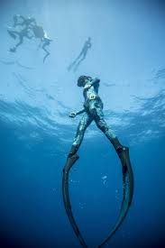
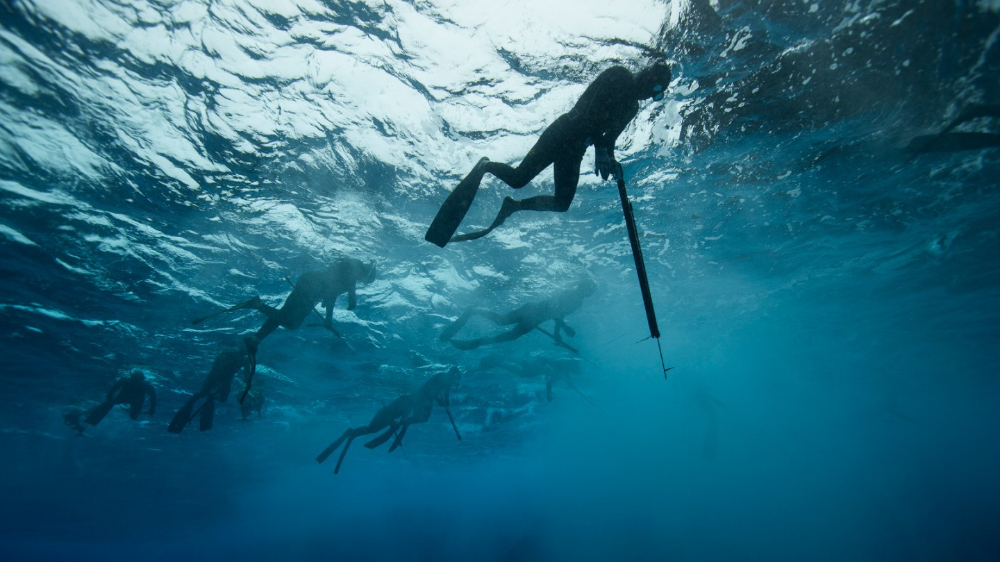

Page1
Page2
Page3
Page4
Home

We will be exploring what you will need in order to freedive/Spear-Fish
Please see the next few pages to learn more!
PS: IF you click on the images you will be redirected to another page.
